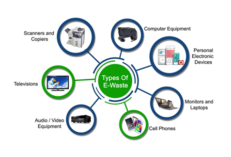
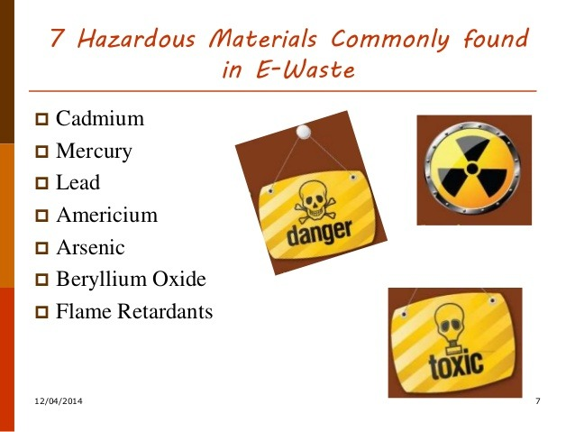
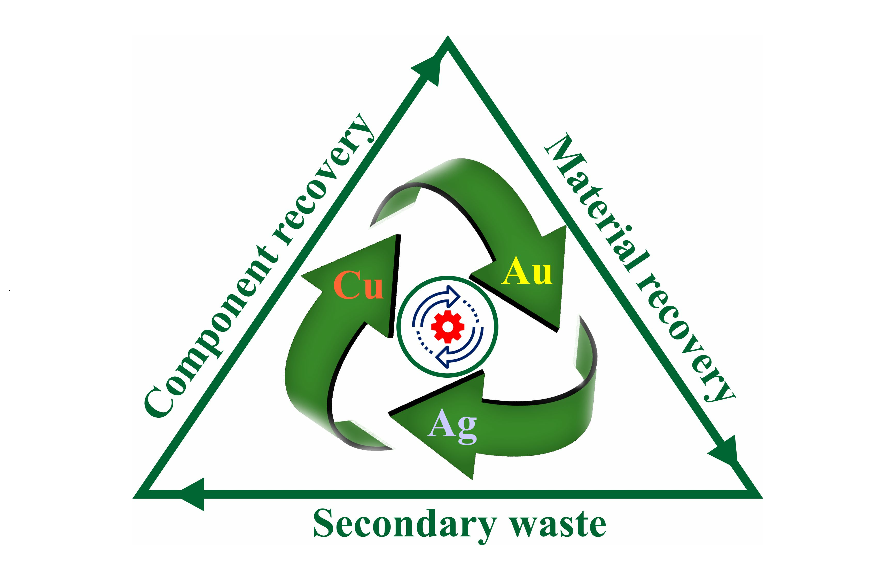

Understanding electronic waste and its global impact
Every year, the world produces millions of tons of electronic waste, or e-waste. But what exactly is e-waste, and why is it important to manage it responsibly?
Find Out More
E-waste includes computers, laptops, tablets, mobile phones, TVs, printers, monitors, kitchen appliances, and even toys with electronic parts. Basically, any device with a plug, battery, or circuit board can become e-waste.

Many electronic devices contain hazardous substances such as lead, mercury, cadmium, and flame retardants. If not properly managed, these substances can pollute soil, water, and air, posing risks to human health and the environment.

E-waste is also a source of valuable materials like gold, silver, copper, and rare earth elements. Proper recycling allows us to recover these resources, reducing the need for new mining and lowering environmental impact.